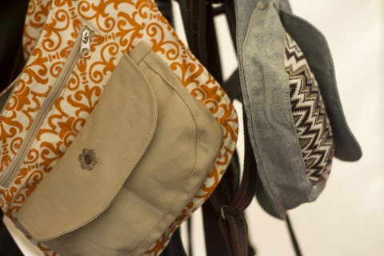

Noticia del Día: Mujeres emprendedoras se forjan un camino de éxito
Un grupo de mujeres aprovechan los materiales naturales y de reciclaje para convertirlos de forma creativa en artesanías. Estas jefas de hogar y madres de familia tienen muchas visiones en común.
Fuente: Festival de las Artes (www.festivaldelasartes.go.cr)
